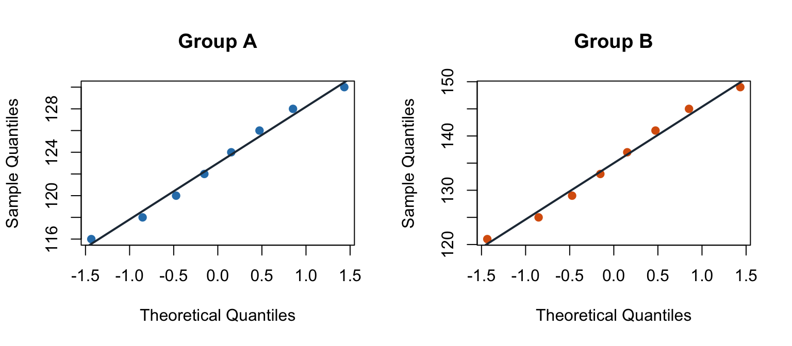
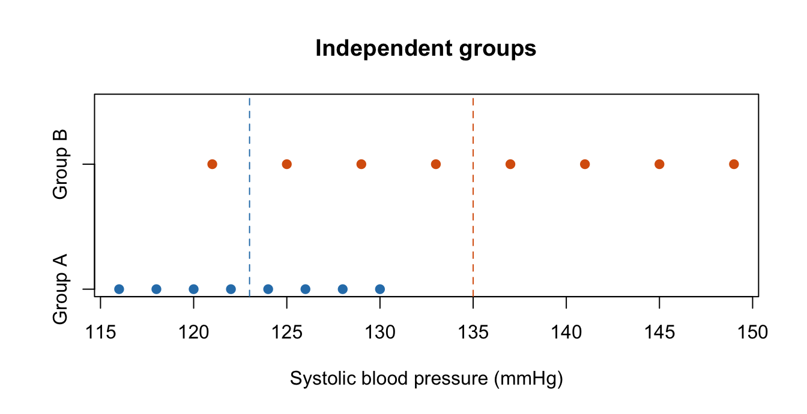

par(mfrow = c(1, 2))
qqnorm(a, main = "Group A", pch = 19, col = "#2C7FB8")
qqline(a, col = "#233444", lwd = 2)
qqnorm(b, main = "Group B", pch = 19, col = "#D95F0E")
qqline(b, col = "#233444", lwd = 2)
You should already be familiar with sample means and sample standard deviations. If you want to go straight to the worked exercise, use Application; the derivations are in Theory, and software extensions are in Statistical applications. You can also download the practice data (CSV) and Excel workbook now.
Learning objectives: identify independent samples, calculate Welch’s statistic from supplied summaries, use the nearest-integer degrees-of-freedom rule, and interpret a critical-value decision. The required reading route is Overview → Application.
The systolic blood pressure values in this lesson are synthetic and fictional. They were constructed for teaching and do not describe real patients or a real study.
This lesson starts with supplied summary statistics. You do not need the individual observations for the required calculation.
| Quantity | Group A | Group B |
|---|---|---|
| Sample size | 8 | 8 |
| Sample mean (mmHg) | 123 | 135 |
| Sample standard deviation (mmHg) | \(\sqrt{24}\) = 4.899 | \(\sqrt{96}\) = 9.798 |
We ask whether the two population means differ. Define every subtraction as Group A minus Group B, and choose a two-sided significance level of \(\alpha=0.05\) before making the decision.
Use an independent two-sample t-test when the outcome is quantitative, there are two distinct groups, and each person or unit contributes one observation to one group. If the same people are measured twice, or observations are explicitly matched, use a paired analysis instead.
With samples this small, the method also relies on each population being roughly bell-shaped without extreme values that dominate its group. Plots can identify concerns, but they do not provide a pass/fail certificate; optional diagnostics appear in Theory.
We use Welch’s two-sample t-test as the default. It permits the two population variances to differ and remains appropriate when the sample sizes differ (Welch 1947; National Institute of Standards and Technology, n.d.). It does not solve dependence, clustering, poor sampling, influential data errors, or a weak study design.
The starting claim is that the two population means have no difference. The competing claim is that they differ. In symbols,
\[ H_0:\mu_A-\mu_B=0 \qquad\text{versus}\qquad H_1:\mu_A-\mu_B\ne0. \]
Here \(H_0\) is the null hypothesis (the starting claim) and \(H_1\) is the alternative hypothesis (the competing claim). The symbols \(\mu_A\) and \(\mu_B\) denote the population averages, which we estimate using the sample means. The standard error (SE) describes the typical sample-to-sample variation in the difference of means. The t statistic expresses the observed difference in SE units after accounting for the starting value of zero. The degrees-of-freedom (df) calculation chooses the row of the t table. A critical value is the cutoff beyond which we reject the starting claim.
Setting \(\alpha=.05\) aims, in repeated studies where the starting claim and model are true, to falsely declare a difference about 5 times in 100. The core recipe is: subtract the means, build the SE from the two group contributions, express the null-adjusted difference in SE units, calculate Welch df, and compare \(|t|\) with the two-sided cutoff. No p-value is required for this decision.
The test uses only the supplied \(n\), mean, and standard deviation for each group. Keep full precision through the calculation and round only reported results.
Fix the direction and decision rule. Work with \(A-B\), use a two-sided test, and set \(\alpha=0.05\). We will reject \(H_0\) when \(|t|\) exceeds the two-sided critical value.
Record the sample sizes. \(n_A=8\) and \(n_B=8\).
Record the means and standard deviations. \(\bar x_A=123\), \(\bar x_B=135\), \(s_A=\sqrt{24}=4.899\), and \(s_B=\sqrt{96}=9.798\) mmHg.
Calculate the observed mean difference.
\[ \bar x_A-\bar x_B=123-135=-12\ \text{mmHg}. \]
Calculate each group’s contribution to the squared standard error.
\[ \frac{s_A^2}{n_A}=\frac{24}{8}=3, \qquad \frac{s_B^2}{n_B}=\frac{96}{8}=12. \]
Combine the contributions to obtain the standard error.
\[ SE=\sqrt{\frac{s_A^2}{n_A}+\frac{s_B^2}{n_B}} =\sqrt{3+12} =\sqrt{15} =3.873\ \text{mmHg}. \]
Form the Welch t statistic under the null difference of zero.
\[ t=\frac{(\bar x_A-\bar x_B)-0}{SE} =\frac{-12}{3.872983} =-3.098. \]
Calculate the Welch–Satterthwaite degrees of freedom.
The two terms in the denominator are
\[ \frac{(3)^2}{8-1}=\frac{9}{7}=1.285714, \qquad \frac{(12)^2}{8-1}=\frac{144}{7}=20.571429. \]
\[ \nu= \frac{\left(s_A^2/n_A+s_B^2/n_B\right)^2} {\dfrac{(s_A^2/n_A)^2}{n_A-1}+\dfrac{(s_B^2/n_B)^2}{n_B-1}} =\frac{15^2}{9/7+144/7} =10.294118. \]
Apply the course table convention. Round the positive Welch degrees of freedom to the nearest integer, with an exact half rounded up:
\[ \nu_{\text{class}}=10.294118\longrightarrow 10. \]
For a two-sided test with \(\alpha=0.05\), the critical value is
\[ t^*=t_{1-\alpha/2,\,10}=t_{0.975,\,10} =2.228. \]
The relevant excerpt from a two-sided t table is shown below. The selected cell is the row for df = 10 and the column for \(\alpha=0.05\).
| df | \(\alpha=.10\) | \(\alpha=.05\) | \(\alpha=.01\) |
|---|---|---|---|
| 8 | 1.860 | 2.306 | 3.355 |
| 9 | 1.833 | 2.262 | 3.250 |
| 10 | 1.812 | 2.228 | 3.169 |
| 11 | 1.796 | 2.201 | 3.106 |
| 12 | 1.782 | 2.179 | 3.055 |
Compare and interpret. \(|t|=3.098\) is greater than \(t^*=2.228\), so reject \(H_0\) at the 5% significance level. Group A’s sample mean is 12 mmHg lower than Group B’s. Under the model assumptions, the data provide evidence that the population means differ. This result supports an association; it establishes a causal effect only when the study design justifies causal inference.
This required decision uses a critical value. A p-value is not needed.
Download the practice data (CSV) and the two-sheet Excel workbook. The workbook sheets are named Practice and Worked solution. All summary statistics needed for the calculation are supplied; the required spreadsheet exercise does not calculate them from raw observations.
Follow these numbered phases so that the spreadsheet mirrors the hand calculation:
The input block must have this layout:
| Row | Column A: label | Column B: Group A | Column C: Group B | Column D: notes |
|---|---|---|---|---|
| 5 | Supplied information | Group A | Group B | Meaning |
| 6 | n | 8 | 8 | Supplied |
| 7 | Mean | 123 | 135 | Supplied (mmHg) |
| 8 | SD | 4.898979 | 9.797959 | Supplied (mmHg) |
| 9 | Alpha | 0.05 | Two-sided | |
| 10 | Hypothesized difference | 0 | Group A minus Group B |
The SDs are displayed to six decimal places, while the workbook retains their full stored values (\(\sqrt{24}\) and \(\sqrt{96}\)) for calculation.
Enter each formula separately. Do not combine steps into one long formula.
| Cell | Column A: label | Formula to enter | Expected result | Explanation |
|---|---|---|---|---|
| B13 | Difference (A − B) | =B7-C7 |
-12 | Subtract the means in the chosen order. |
| B14 | Group A contribution | =B8^2/B6 |
3 | Square A’s supplied SD and divide by its sample size. |
| B15 | Group B contribution | =C8^2/C6 |
12 | Repeat for Group B. |
| B16 | Standard error | =SQRT(B14+B15) |
3.873 | Take the square root of the sum. |
| B17 | t statistic | =(B13-B10)/B16 |
-3.098 | Express the difference from the null in SE units. |
| B18 | df denominator term A | =B14^2/(B6-1) |
1.285714 | Calculate A’s term in the df denominator. |
| B19 | df denominator term B | =B15^2/(C6-1) |
20.571429 | Calculate B’s term in the df denominator. |
| B20 | Welch df | =(B14+B15)^2/(B18+B19) |
10.294118 | Divide the squared sum by the two denominator terms. |
| B21 | Class df | =ROUND(B20,0) |
10 | Select the nearest whole-number table row. |
| B22 | Two-sided critical value | =T.INV.2T(B9,B21) |
2.228 | Use alpha and the explicitly rounded df. |
| B23 | Absolute t | =ABS(B17) |
3.098 | Count departures in either direction. |
| B24 | Decision | =IF(B23>B22,"Reject H0","Do not reject H0") |
Reject H0 | Compare the absolute statistic with the cutoff. |
ROUND(B20,0) makes the course convention visible: for a positive value, Excel rounds an exact half up. Supplying the integer in B21 to T.INV.2T also avoids relying on the function’s implicit truncation of a non-integer degrees-of-freedom argument (Microsoft Support, n.d.-a).
Format cells to show a convenient number of decimal places, but do not replace formulas with rounded values. Premature rounding can change a statistic near a critical boundary.
If the subtraction were changed to Group B minus Group A, what would change?
The estimated difference and \(t\) statistic would become positive, but \(|t|\), the critical value, and the two-sided decision would remain unchanged.
Why do we compare \(|t|\) with a positive critical value?
The two-sided alternative includes departures in both directions. Taking \(|t|\) measures how far the statistic lies from zero, regardless of sign.
Suppose \(|t|\) had been 2.10 with the same critical value. What would the course decision be?
Because \(2.10<2.228\), we would not reject \(H_0\) at the 5% level. That would not prove the means equal.
T.INV.2T silently truncate a fractional df instead of applying the course’s explicit nearest-integer rule.Optional — not covered or required for this course.
Treat assumptions as questions about how the data arose. A normality test or variance test is not a pass/fail gate for choosing a method.
| Issue | Question to ask | What a diagnostic can and cannot tell you | Sensible response |
|---|---|---|---|
| Independence | Were units sampled independently, assigned independently, and measured once? Is there clustering by household, class, clinic, or site? | A plot or normality test cannot verify independence. This comes from the design and data-collection process. | Use a paired, clustered, or multilevel method when the design creates dependence. |
| Outcome distribution | Within each population, are severe skew, heavy tails, or unusual values plausible? | Dot plots and Q–Q plots can reveal data errors and influential observations. With only eight observations per group, they cannot prove normality or reliably rule out important departures. | Verify unusual values, report robust summaries, and consider a sensitivity analysis when conclusions depend on a few observations. |
| Variances | Could population variances differ? | A preliminary equality-of-variance test is noisy and creates an unreliable two-stage procedure (Zimmerman 2004). | Use Welch by default; it already allows unequal variances. |
| Sampling and assignment | From what population were units sampled, and how were groups formed? | The t-test cannot repair selection bias, confounding, or non-random treatment assignment. | Match the interpretation to the design: sampling supports generalization; random assignment supports causal claims. |
Q–Q plots compare each ordered sample with the pattern expected from a normal distribution. Large systematic curves or isolated points deserve investigation; close alignment is reassuring but cannot prove population normality.
par(mfrow = c(1, 2))
qqnorm(a, main = "Group A", pch = 19, col = "#2C7FB8")
qqline(a, col = "#233444", lwd = 2)
qqnorm(b, main = "Group B", pch = 19, col = "#D95F0E")
qqline(b, col = "#233444", lwd = 2)
Shapiro–Wilk tests provide a formal check for departures from normality:
shapiro.test(a)
Shapiro-Wilk normality test
data: a
W = 0.97486, p-value = 0.9332shapiro.test(b)
Shapiro-Wilk normality test
data: b
W = 0.97486, p-value = 0.9332With only 8 observations per group, these tests have low power: a large p-value means that this small sample did not reveal a clear departure, not that the population has been proved normal. A small p-value also needs follow-up with the plot and data context rather than automatic rejection of the method.
The sample variances are \(s_A^2=24\) and \(s_B^2=96\). We describe that difference and use Welch throughout. An F test such as var.test(a, b) would itself rely strongly on normal populations, and using it as a gate to switch between pooled and Welch tests adds avoidable error. Welch does not require the variances to be equal or to be proved unequal.
For independent samples,
\[ E(\bar X_A-\bar X_B)=\mu_A-\mu_B \]
and independence makes the covariance term zero, so
\[ \operatorname{Var}(\bar X_A-\bar X_B) =\operatorname{Var}(\bar X_A)+\operatorname{Var}(\bar X_B) =\frac{\sigma_A^2}{n_A}+\frac{\sigma_B^2}{n_B}. \]
The population variances are unknown. Substituting the independent sample-variance estimates gives
\[ \widehat{\operatorname{SE}}(\bar X_A-\bar X_B) =\sqrt{\frac{s_A^2}{n_A}+\frac{s_B^2}{n_B}}. \]
The denominator is random. The Welch–Satterthwaite approximation can be obtained by matching its first two moments. Let
\[ Q=\frac{S_A^2}{n_A}+\frac{S_B^2}{n_B}. \]
For independent normal samples, \(E(S_i^2)=\sigma_i^2\) and \(\operatorname{Var}(S_i^2)=2\sigma_i^4/(n_i-1)\). Therefore
\[ E(Q)=V=\frac{\sigma_A^2}{n_A}+\frac{\sigma_B^2}{n_B} \]
and
\[ \operatorname{Var}(Q)=2\left[ \frac{\sigma_A^4}{n_A^2(n_A-1)}+ \frac{\sigma_B^4}{n_B^2(n_B-1)} \right]. \]
Approximate \(Q\) by a scaled chi-square variable \(c\chi_\nu^2\). Matching the mean and variance gives \(c\nu=V\) and \(2c^2\nu=\operatorname{Var}(Q)\). Eliminating \(c\) gives
\[ \nu=\frac{2V^2}{\operatorname{Var}(Q)}. \]
Replacing the unknown population variance components with their sample estimates produces
\[ \nu= \frac{\left(s_A^2/n_A+s_B^2/n_B\right)^2} {\dfrac{(s_A^2/n_A)^2}{n_A-1}+\dfrac{(s_B^2/n_B)^2}{n_B-1}}. \]
This moment matching is why \(\nu\) can be fractional: it is an effective shape parameter for the reference distribution, not a literal count of observations. Software normally retains its fractional value.
If both samples are normal and share one population variance \(\sigma^2\), define
\[ s_p^2= \frac{(n_A-1)s_A^2+(n_B-1)s_B^2} {n_A+n_B-2}. \]
Under \(H_0\), the standardized mean difference based on the true variance,
\[ Z=\frac{\bar X_A-\bar X_B} {\sigma\sqrt{1/n_A+1/n_B}}, \]
has a standard normal distribution. The pooled within-group sum of squares satisfies
\[ U=\frac{(n_A+n_B-2)s_p^2}{\sigma^2} \sim\chi^2_{n_A+n_B-2}, \]
and, for normal samples, \(Z\) and \(U\) are independent. This normal/chi-square independence is a consequence of Cochran’s theorem; we use it here without proving the theorem. Therefore
\[ \frac{Z}{\sqrt{U/(n_A+n_B-2)}} =\frac{\bar X_A-\bar X_B} {s_p\sqrt{1/n_A+1/n_B}} \sim t_{n_A+n_B-2}. \]
That exact result requires normality and a common population variance. Welch’s fractional-degree-of-freedom reference distribution is approximate when population variances differ. With non-normal populations, both methods increasingly rely on large-sample behavior.
In this example \(n_A=n_B\). That equality makes the Welch and pooled standard errors, and therefore their t statistics, identical even though the sample variances differ. Their degrees of freedom are different: Welch gives 10.294118, while the pooled test gives \(8+8-2=14\). This convenient coincidence does not hold in general when sample sizes differ.
Using the fractional Welch degrees of freedom, a 95% confidence interval for \(\mu_A-\mu_B\) is
\[ (\bar x_A-\bar x_B)\ \pm\ t_{0.975,\nu}\,SE =-12\ \pm\ 2.220(3.873) =\bigl(-20.596,\ -3.404\bigr)\ \text{mmHg}. \]
The interval estimates the range of population mean differences compatible with the model and data. It excludes zero and is entirely negative, agreeing with the two-sided test while also showing the plausible direction and magnitude.
A one-sided question must be chosen before inspecting the results. For \(H_1:\mu_A-\mu_B<0\), the 5% critical boundary using the class degrees of freedom is \(-t_{0.95,10}=-1.812\). Because -3.098 is below that boundary, the one-sided test rejects \(H_0\). The opposite alternative, \(H_1:\mu_A-\mu_B>0\), would not. Choosing the direction after seeing the sign of the estimate invalidates the intended error rate.
Optional — not covered or required for this course.
Software commonly reports a p-value: assuming the null hypothesis and model, it is the probability of obtaining a test statistic at least as extreme as the one observed. For this two-sided test, departures in both directions count. It is not the probability that the null hypothesis is true. A p-value below the prespecified \(\alpha=.05\) leads to rejection under the software’s fractional-df convention. A confidence interval additionally describes the estimated difference and its uncertainty; see the optional theory above.
The required calculation above deliberately starts from supplied summaries. The individual values below are provided only for visualization and software practice.
| Group | SBP (mmHg) |
|---|---|
| A | 116 |
| A | 118 |
| A | 120 |
| A | 122 |
| A | 124 |
| A | 126 |
| A | 128 |
| A | 130 |
| B | 121 |
| B | 125 |
| B | 129 |
| B | 133 |
| B | 137 |
| B | 141 |
| B | 145 |
| B | 149 |

Software ordinarily uses the fractional Welch degrees of freedom. For this example, that gives \(t^*=2.220\), compared with 2.228 under the course’s integer-table convention. The decision is the same.
Open the CSV in Excel. Its columns are group and sbp, with Group A in rows 2–9 and Group B in rows 10–17. Enter
=T.TEST(B2:B9,B10:B17,2,3)Here 2 requests a two-sided test and 3 requests the unequal-variance (Welch) version. Excel returns 0.010915000. This is a p-value and is shown only as a software cross-check; it is not required for the course’s critical-value calculation (Microsoft Support, n.d.-b).
The saved native verification was recalculated and reopened without a repair prompt in Microsoft Excel for Mac 16.113; the linked provenance records the input and output fingerprints.
Saved native Excel worksheet result (CSV; provenance: JSON)
| Item | Result |
|---|---|
| Mean difference (A - B) | -12.000000000 |
| t statistic | -3.098386677 |
| Fractional Welch df | 10.294117647 |
| T.TEST two-sided p-value | 0.010915000278 |
Enable the Analysis ToolPak if Data Analysis is absent from the Data tab.
Then choose Data > Data Analysis > t-Test: Two-Sample Assuming Unequal Variances. Select the eight Group A values as Variable 1 and the eight Group B values as Variable 2, enter 0 for Hypothesized Mean Difference, tick Labels only if the selected ranges include headings, set Alpha to 0.05, choose an output range or new worksheet, and run the analysis (Microsoft Support, n.d.-c).
The ToolPak rounds Welch degrees of freedom to the nearest integer, whereas worksheet T.TEST, R, and SciPy use the fractional value. In this dataset the ToolPak reports df 10; its critical value therefore matches the class workbook.
Saved native Excel Analysis ToolPak output (CSV)
| Statistic | Group A / result | Group B |
|---|---|---|
| Mean | 123 | 135 |
| Variance | 24 | 96 |
| Observations | 8 | 8 |
| Hypothesized Mean Difference | 0 | |
| df | 10 | |
| t Stat | -3.098386677 | |
| P(T<=t) one-tail | 0.005640808734 | |
| t Critical one-tail | 1.812461123 | |
| P(T<=t) two-tail | 0.01128161747 | |
| t Critical two-tail | 2.228138852 |
The native ToolPak two-sided p-value is 0.011281617468, slightly larger than the worksheet T.TEST result because the ToolPak uses the rounded df of 10.
Both Excel p-values are below .05, so both methods reject equal population means. The negative t statistic reflects the chosen A minus B order. In the ToolPak table, use P(T<=t) two-tail for this two-sided question; the one-tail rows answer a different question.
R’s t.test() uses Welch’s method by default, but setting var.equal = FALSE makes the choice explicit (R Core Team, n.d.).
Start R or RStudio with the project folder as the working directory, then run the following code. It uses only R’s built-in stats package.
dat <- read.csv("topics/hypothesis-testing/data/independent-t-test.csv")
a_r <- dat$sbp[dat$group == "A"]
b_r <- dat$sbp[dat$group == "B"]
t.test(
a_r,
b_r,
alternative = "two.sided",
mu = 0,
var.equal = FALSE,
conf.level = 0.95
)
Welch Two Sample t-test
data: a_r and b_r
t = -3.0984, df = 10.294, p-value = 0.01092
alternative hypothesis: true difference in means is not equal to 0
95 percent confidence interval:
-20.596241 -3.403759
sample estimates:
mean of x mean of y
123 135 The output reports \(t=-3.098\), fractional df \(=10.294\), the same 95% confidence interval shown above, and the two-sided p-value 0.010915.
Because the p-value is below .05 and the interval excludes zero, this output supports a population mean difference under the model. The sample estimates show Group A lower than Group B.
SciPy’s ttest_ind() defaults to the pooled test, so equal_var=False is essential for Welch’s method (SciPy Developers, n.d.). From the project root, create an environment, install the pinned validation dependencies, and run the complete reproducible script:
python3 -m venv .venv
source .venv/bin/activate
python -m pip install -r requirements-validation.txt
python topics/hypothesis-testing/_examples/independent-t-test/example.pyThe essential analysis can be written compactly. This version imports the same CSV and makes the unequal-variance choice explicit:
import csv
from scipy import stats
with open("topics/hypothesis-testing/data/independent-t-test.csv", newline="") as f:
rows = list(csv.DictReader(f))
a = [float(row["sbp"]) for row in rows if row["group"] == "A"]
b = [float(row["sbp"]) for row in rows if row["group"] == "B"]
result = stats.ttest_ind(a, b, equal_var=False, alternative="two-sided")
print(f"t={result.statistic:.9f}, df={result.df:.9f}, p={result.pvalue:.12f}")The complete verification script is example.py, its saved console output is python-output.txt, and the cross-software environment record is provenance.json. Saved output:
input_md5=c8273388b3cb789fcbb53288a13ac818
group_A_n=8
group_A_mean=123
group_A_sd=4.8989794855663558
group_B_n=8
group_B_mean=135
group_B_sd=9.7979589711327115
mean_difference_A_minus_B=-12
standard_error=3.872983346207417
t_statistic=-3.0983866769659336
degrees_of_freedom=10.294117647058822
p_value_two_sided=0.010915000277860675
ci_95_lower=-20.596240505819864
ci_95_upper=-3.4037594941801377
df_class=10
critical_t_df_class=2.2281388519862739
critical_t_full_df=2.219539754602263
numpy_version=2.5.3
scipy_version=1.18.1
python_version=3.14.6Across R, SciPy, and Excel’s T.TEST(...,2,3), expect the same difference (-12.000), standard error (3.873), t statistic (-3.098), fractional Welch df (10.294 where reported), and two-sided inference, apart from display rounding.
In the saved Python output, t_statistic is the signed t value, degrees_of_freedom is the fractional Welch df, and p_value_two_sided is the two-sided p-value. The small p-value and entirely negative confidence interval support the same conclusion as R. These software results agree with the required critical-value decision for this example.